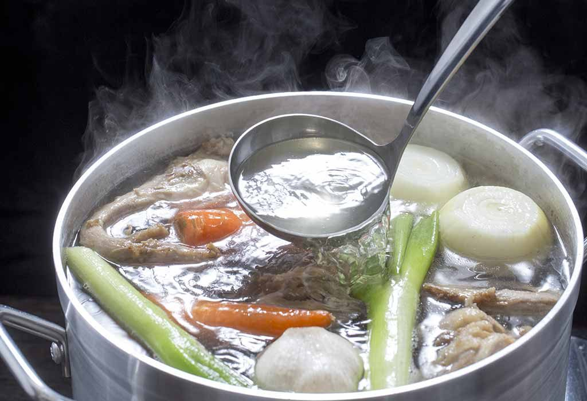
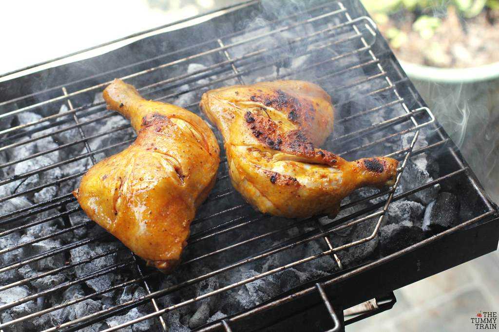
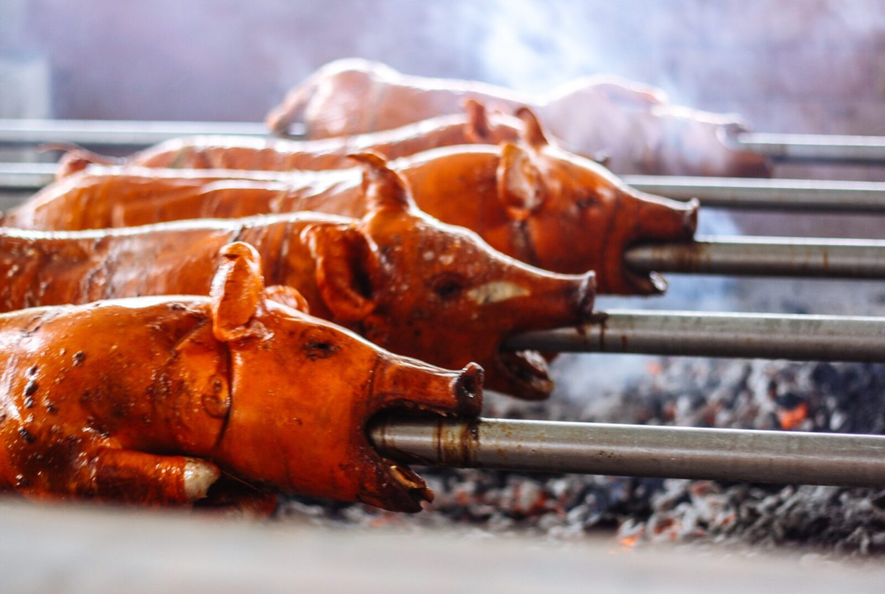
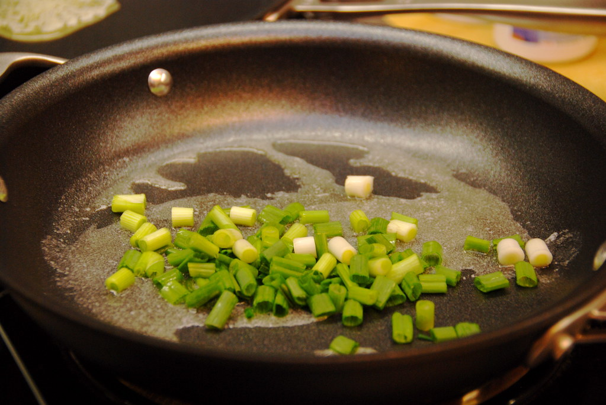
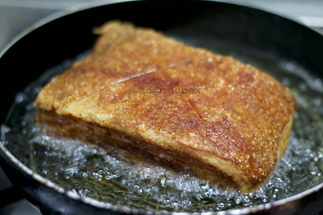

Cooking methods in the Philippines
Introduction
Filipino cuisine (Filipino: lutuing Pilipino/pagkaing Pilipino) is composed of the cuisines of more than a hundred distinct ethno-linguistic groups found throughout the Philippine archipelago. However, a majority of mainstream Filipino dishes that compose Filipino cuisine are from the cuisines of the various ethnolinguistic groups and tribes of the archipelago, including the Ilocano, Pangasinan, Kapampangan, Tagalog, Bicolano, Visayan (Cebuano, Hiligaynon and Waray), Chavacano and Maranao ethno-linguistic groups.
In this page, We will be looking at the foundational methods that make up the majority of Filipino cuisine. We aim to further understand our beloved dishes so that we may use them in the appropriate way. For this reason, introduction page will dive head-first and will attempt to articulate everything about the cooking method to shed light into the process of using it to give you a taste for what is to come.
A recipe has no soul. You, as the cook, must bring sould to the recipe.
Foundations of cooking
Although Filipino food is one of complexity with its varied origins of Malay, Chinese and Spanish, yet the cooking methods are rather simple. Basically, the four cooking methods that support the foundation of Filipino cookery are boiling (nilaga), grilling (ihaw), roasting (lechon), and frying (prito). These cooking methods form the very basis of the modern-day demand of healthy cooking. It was not until the arrival of the Spanish that the method of sauteeing (guisado) was "Filipinized" and introduced into the Filipino kitchen, adding to the basic forms of Filipino cookery.
we will be discussing the cooking methods below
Boiling / Nilaga

Scientifically speaking, boiling is an explosive phase change between a liquid state and a gas state. In the kitchen, boiling is cooking food at a relatively high temperature, 212 degrees, in water or some other water-based liquid. When liquids boil, bubbles caused by water vapor rush to the surface of the liquid and pop. It’s a vigorous process that works best for sturdier foods; anything delicate can get damaged.
Boiling is a moist-heat cooking method that happens when the liquid’s temperature reaches 212 degrees. Food is completely submerged in water for even heat distribution. The full boil is a vigorous one, where bubbles rapidly and violently break over the entire surface of the water. A slow boil is a lazy boil, almost a simmer, at 205 degrees. In the case of a slow boil, bubbles will slowly break over the surface of the water. Depending on the food you cook, you either have to add it to already boiling water, or add it to cool water and bring it up to boiling temperature; there’s more on that later, down below.
Grilling / Ihaw

Grilling is a form of cooking that involves dry heat applied to the surface of food, commonly from above, below or from the side. Grilling usually involves a significant amount of direct, radiant heat, and tends to be used for cooking meat and vegetables quickly. Food to be grilled is cooked on a grill (an open wire grid such as a gridiron with a heat source above or below), using a cast iron/frying pan, or a grill pan (similar to a frying pan, but with raised ridges to mimic the wires of an open grill).
Heat transfer to the food when using a grill is primarily through thermal radiation. Heat transfer when using a grill pan or griddle is by direct conduction. In the United States, when the heat source for grilling comes from above, grilling is called broiling. In this case, the pan that holds the food is called a broiler pan, and heat transfer is through thermal radiation. Direct heat grilling can expose food to temperatures often in excess of 260 °C (500 °F). Grilled meat acquires a distinctive roast aroma and flavor from a chemical process called the Maillard reaction. The Maillard reaction only occurs when foods reach temperatures in excess of 155 °C (310 °F).
Roasting / Lechon

Lechón (Spanish pronunciation: [leˈt͡ʃon]; from leche "milk" + -ón) is a pork dish in several regions of the world, most specifically in Spain and former Spanish colonial possessions throughout the world. Lechón is a Spanish word referring to a roasted baby pig (piglet) which was still fed by suckling its mother's milk (a suckling pig). Lechón is a popular food in Spain, Cuba, Puerto Rico, the Dominican Republic, and other Spanish-speaking nations in Latin America. The dish features a whole roasted suckling pig cooked over charcoal. It has been described as a national dish of Cuba, Puerto Rico, and Spain.
Additionally, it is popular in the Philippines and other Austronesian regions, whose pig-roasting traditions have native pre-colonial origins. Although it acquired the Spanish name as a general term for "roasted pig", in these regions it more often refers to adult roasted pigs, not lechones (milk suckling pigs). It is also sometimes considered one of the unofficial national dishes of the Philippines, with Cebu being asserted by American chef Anthony Bourdain as having the best pigs.
Sauteeing / Guisado

Ingredients for sautéing are usually cut into small pieces or thinly sliced to provide a large surface area, which facilitates fast cooking. The primary mode of heat transfer during sautéing is conduction between the pan and the food being cooked. Food that is sautéed is browned while preserving its texture, moisture, and flavor. If meat, chicken, or fish is sautéed, the sauté is often finished by deglazing the pan's residue to make a sauce.
Sautéing may be compared with pan frying, in which larger pieces of food (for example, chops or steaks) are cooked quickly in oil or fat, and flipped onto both sides. Some cooks make a distinction between the two based on the depth of the oil used, while others use the terms interchangeably. Sautéing differs from searing in that searing only browns the surface of the food. Certain oils should not be used to sauté due to their low smoke point. Clarified butter, rapeseed oil and sunflower oil are commonly used for sautéing; whatever the fat, it must have a smoke point high enough to allow cooking on medium-high heat, the temperature at which sautéing is done. For example, though regular butter would produce more flavor, it would burn at a lower temperature and more quickly than other fats due to the presence of milk solids. Clarified butter is more fit for this use.
Frying / Prito

frying, the cooking of food in hot fats or oils, usually done with a shallow oil bath in a pan over a fire or as so-called deep fat frying, in which the food is completely immersed in a deeper vessel of hot oil. Because the food is heated through a greasy medium, some authorities consider frying to be technically a dry-heat cooking process.
The technique of frying is ancient, ubiquitous, and highly versatile; it has been used since antiquity and in most cultures to prepare meats and fish, vegetables, and breads. This popularity, together with the fairly low cost of large-scale frying, made fried foods staples of the late 20th-century fast-food industry. Fatty meats such as bacon and ground beef are usually fried in their own rendered fat. Relatively lean meats, fish, and vegetables are often floured or dipped in batter before being fried. More delicate cooking often calls for meats and vegetables to be sautéed—that is, lightly browned in a small amount of butter, light shortening, or oil. In addition to meat drippings, butter, and lard, once easily rendered in the home, commercially produced corn, peanut, and other seed oils are common frying mediums.